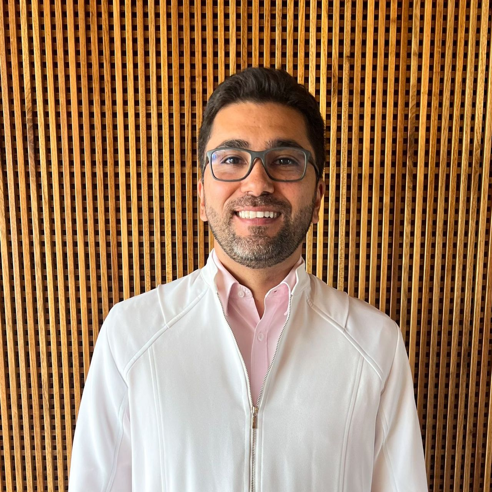

Cirurgia a laser
Precisão de luz concentrada.
Tratamento de hemorroidas, fístula anal e cisto pilonidal com laser, uma abordagem menos invasiva que a cirurgia convencional.
Coloproctologista · CRM-GO 13161 · RQE 8512
Toda jornada difícil fica mais leve com um bom guia. Diagnóstico e tratamento das doenças do intestino, do reto e do ânus.
↑↓navegarEnterselecionar

Pacientes descrevem o atendimento como atencioso, calmo e explicado em detalhe.
Cada caso pede a técnica certa. A indicação é feita depois da avaliação em consulta.
Precisão de luz concentrada.
Tratamento de hemorroidas, fístula anal e cisto pilonidal com laser, uma abordagem menos invasiva que a cirurgia convencional.
Grandes feitos, pequenas incisões.
Cirurgia do intestino grosso feita por pequenas incisões, guiada por câmera.
Ver antes de agir.
Exame do cólon para diagnóstico e prevenção, incluindo a detecção de pólipos.
Toda aventura começa com uma conversa.
Avaliação completa, exame clínico e plano de tratamento explicado sem pressa.
Salvar o progresso.
Acompanhamento do tratamento e do pós-operatório.
Fala a língua do viajante.
Consultas em português ou em inglês. English-speaking consultations available.
Procure pelo nome. Se o que você sente não está aqui, fale comigo mesmo assim.
Nenhuma entrada encontrada. Mande sua dúvida pelo WhatsApp.
Dois pontos de parada em Goiânia. Escolha o mais perto de você.
“Excelente médico. Super atencioso e competente. Sempre disposto a ajudar e acessível. Atualizado sobre novas opções de tratamento.”
“Excelente profissional!! Meu marido fez cirurgia de hemorroidas com ele. Tranquilo, calmo, explica tudo detalhadamente.”
“Excelente profissional. Muito atencioso durante a consulta. Me tirou todas as dúvidas.”
“Parabéns pelo excelente trabalho. Eu e meu esposo ficamos felizes com a consulta, o atendimento e o resultado do tratamento.”
Pelo botão do WhatsApp, que já abre com uma mensagem pronta, ou pelo telefone do local de sua preferência: IGM (62) 3998-9151 ou GastroEla (62) 99800-5064.
Não. O atendimento é particular.
Não necessariamente. A técnica é definida depois da consulta e do exame, de acordo com o tipo e o grau da doença.
Sim. As consultas podem ser feitas em português ou em inglês.
Mande uma mensagem pelo WhatsApp para combinar o melhor dia e horário.
◆ Iniciar jornadaQual o assunto da consulta?
Seus dados ficam só na conversa do WhatsApp; o site não guarda nada.